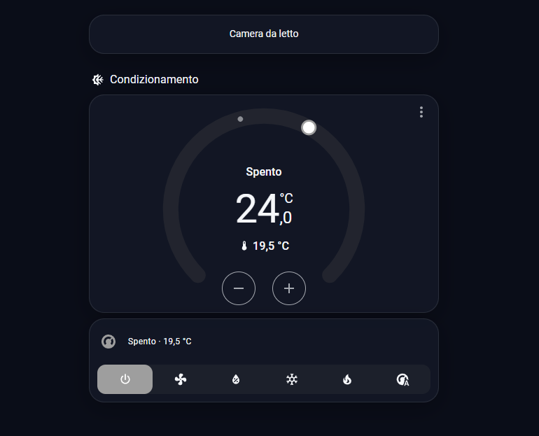

L’idea
Questo progetto collega il climatizzatore Fujitsu AIRSTAGE Cloud a Home Assistant tramite un’integrazione non ufficiale. L'integrazione che avevo provato, già esistente, non mi soddisfaceva e in più spesso non forniva più i dati del condizionatore come se fosse disconnesso dalla rete
Configurazione
Tramite il pulsante sottostante si può accedere alla pagina di GitHub con tutte le informazioni aggiuntive per collegare la Repository al vostro Home Assistant ed utilizzare l'integrazione.
Cosa posso controllare
Tramite questa integrazione si può controllare il funzionamento del condizionatore, come accensione e spegnimento, modifica della temperatura di funzionamento e modifica della modalità di utilizzo. Inoltre si ha accesso a informazioni come Temperatura interna e Temperatura esterna sempre derivanti dai sensori del condizionatore.



Automazioni e dashboard
Io ho inserito i dati del sensore di temperatura aquisito da questa integrazione nella dashboard Home

Oltre a questo ho anche inserito una scheda con i comandi del condizionatore nella plancia "Camera da letto" dove è installato
Risultato e appunti
Alla prima prova ho dovuto rivedere alcuni punti come i nomi dei sensori temperatura che si chiamavano entrambi "Temperatura" senza fare la distinzione tra interno ed esterno. Non avevo anche inserito una icona dell'integrazione e quindi appariva una icona bianca, ma l'ho caricata nella successiva modifica. Ma in generale ha funzionato tutto correttamente e al momento è in prova. Aggiornerè la pagina appena avrò novità sull'integrazione
Massimo, 14/11/2026